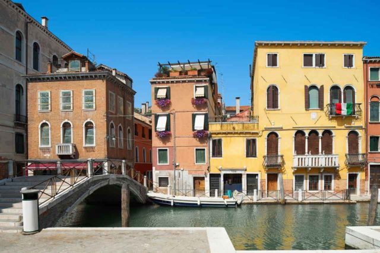
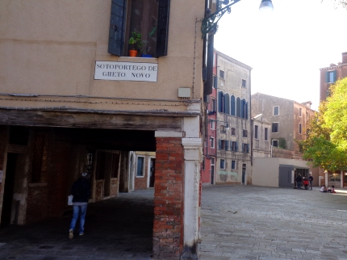
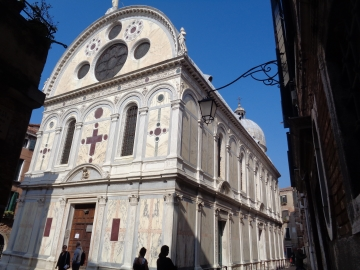

Cannaregio ist eines der sechs Stadtteile (Sestieri) der Insel Venedig. Der gesamte Norden der Altstadt, etwa vom Hauptbahnhof bis zur Kirche Santa Maria dei Miracoli nordöstlich der Rialtobrücke, gehört zu Cannaregio. Es ist ein sehr interessantes Stadtviertel ohne die ganz großen Sehenswürdigkeiten, welche Venedig so berühmt machen. Viele Touristen durchqueren Cannaregio zu Fuß auf dem Weg vom Bahnhof zur Rialtobrücke. Manche besuchen zumindest das jüdische Viertel von Venedig, die meistbesuchte Sehenswürdigkeit in Cannaregio. Doch der interessante Norden des Stadtteils wird nur von einem sehr kleinen Anteil der Touristen besucht. Gerade hier findet man noch so etwas wie das gute, alte Venedig. Verwinkelte Gassen, kleine Geschäfte und Pensionen und einige sehr gute Cafes, Bars und Restaurants.
Der Name des Viertels kann auf zwei verschiedene Arten hergeleitet werden. Die erste Erklärung ist eine Abstammung vom Begriff ‚Canal Regio‘. Damit wird ein Kanal bezeichnet, der früher als Zugang von der Stadt zum Festland diente. Die zweite Erklärung kommt von „Canna Regio“. Das bedeutet, dass es sich um eine Gegend handelte, die früher dicht mit Schilf bewachsen war. Cannaregio war in früherer Zeit das Judenviertel Venedigs. Denn nur dort im etwas abgelegenen „Ghetto vecchio“ durften sich zur damaligen Zeit die Juden niederlassen. Durch den begrenzten Platz waren die Menschen damals gezwungen ihre Häuser in die Höhe zu bauen. Aus diesem Grund finden sich nur in diesem Viertel Venedigs relativ hohe Wohnhäuser mit fünf oder sechs Stockwerken.


Unbedingt besuchen sollte man das Juden-Viertel um den Platz Campo di Ghetto Nove. Sehenswert sind das jüdische Museum, die Synagoge und die Denkmäler. Das Wort "Ghetto" stammt übrigens von hier und hat es von Venedig kommend in alle großen europäischen Sprachen geschafft. Die Juden wurden nachts früher in ihrem Viertel eingesperrt. Ghetto bedeutet auf Italienisch eigentlich Gießerei. An der Stelle des Judenviertels war eine Eisen-Gießerei, deswegen hieß das Viertel schon vor dem Zuzug der Juden Ghetto.
Auch eine der bekanntesten Kirchen von Venedig ist in Cannaregio, die Chiesa Santa Maria dei Miracoli (Kirche der Heiligen Maria der Wunder). Die fast quadratische Kirche ist im Stil der frühen Renaissance (15: Jahrhundert) erbaut. Sie wird wegen der tollen Fassade oft auch einfach Marmor-Kirche genannt. Sehr schönes Bauwerk, das 3 Euro Eintritt kostet, lohnt sich. Miracoli heißt übersetzt Wunder (Plural), deswegen heißt wohl auch das in Deutschland sehr bekannte Spaghetti-Fertiggericht aus dem Supermarkt so.

Cannaregio muss man einfach erlebt haben. Das Viertel bietet auf engstem Platz eine Vielfalt für Besucher und Einheimische. Egal, ob es das bunte Treiben auf der Strada Nova ist oder das beschauliche Leben in einer der ruhigeren Ecken des Viertels – der besondere Charme überträgt sich auf den Besucher genauso wie auf die Einheimischen. Der Stadtteil lädt geradezu ein, ihn auf einem ausgedehnten Spaziergang zu entdecken. Denn jede der 33 Inseln ist anders. Gerade für Hobbyfotografen bieten sich an allen Ecken wunderbare Fotomotive. Der Kontrast zwischen der oftmals überlaufenen Strada Nova, bei der sich die Menschen aus aller Welt tummeln und den beschaulichen Straßen, die ganz den Einheimischen gehören, macht das Viertel einzigartig. Besonders am Abend – siehe auch Venedg bei Nacht! Der pulsierende Stadtteil verströmt Geschichte und lässt den Besucher erleben, was die weltberühmte Lagunenstadt ausmacht, denn es zeigt beide Seiten der Stadt. Wer sich ein besonderes Erlebnis gönnen möchte, sollte sich, wenn es zeitlich passt, der Führung „Legenden und Geister von Cannaregio“ anschließen. Die Führung beginnt bei Einbruch der Dunkelheit und zeigt das Viertel noch einmal von einer ganz anderen Seite. Gerade, wenn man die Stadt von ihrer touristischen Seite bereits kennt, ist diese Führung eine willkommene Abwechslung.